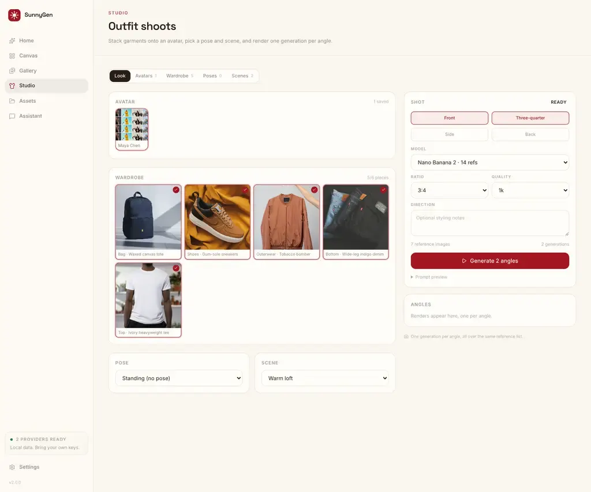
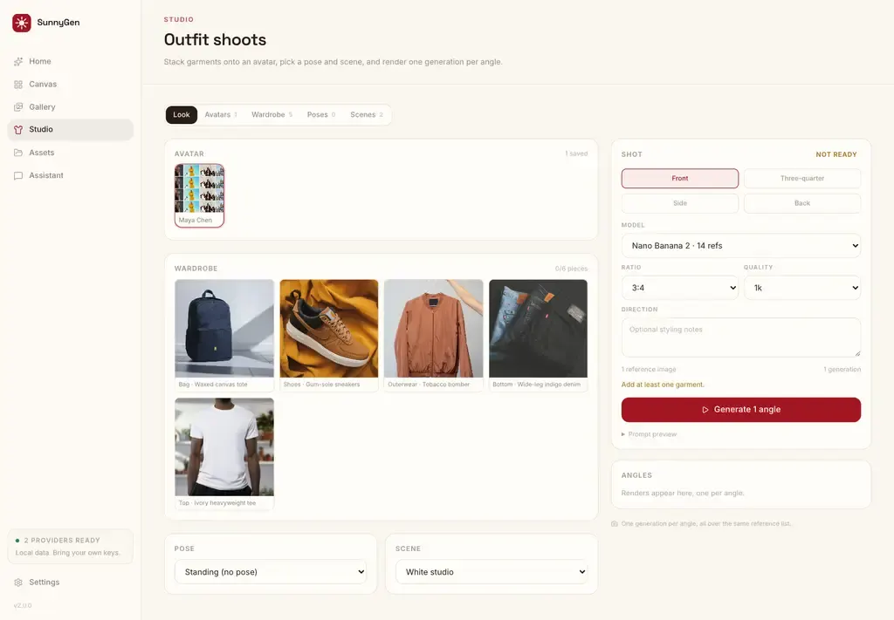
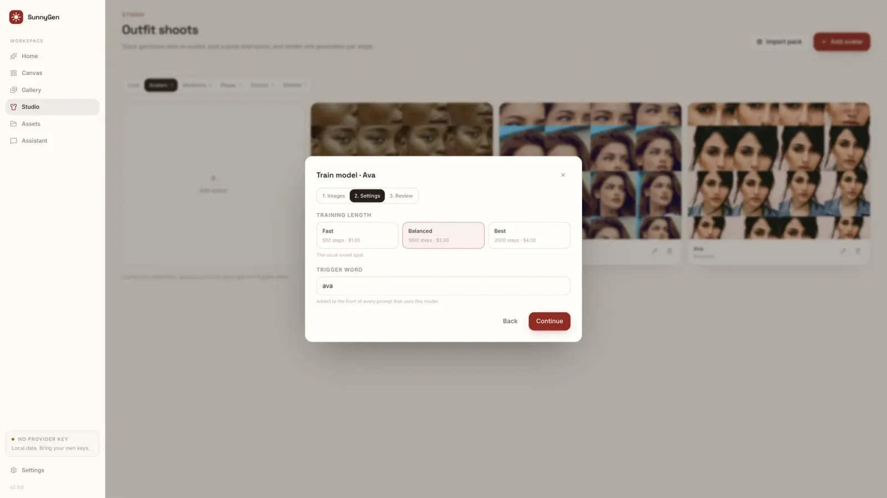
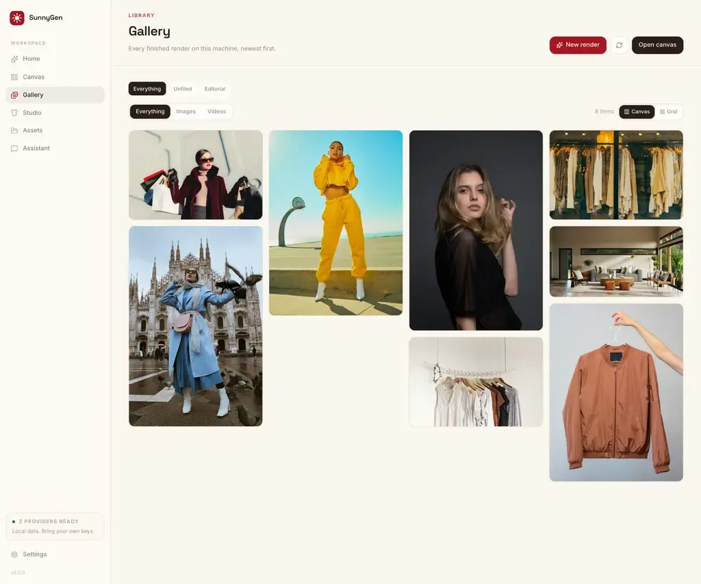

The self-hosted studio for AI image and video generation
SunnyGen is a free, open-source AI image and video generator that runs on your own machine. Build reusable pipelines on a node canvas, shoot avatars and lookbooks in Studio, and train FLUX LoRAs on your own characters, all with your own API keys.
- MIT licensed
- No account
- No telemetry
- No markup on renders

One local app for the whole image workflow
A self-hosted alternative to cloud AI studios. Chain prompts, models, and reference images into workflows that render on your own provider accounts, and keep every project, key, and asset on your disk.
Avatar studio
Avatars, wardrobe slots, poses, scenes, and 1–4 angle lookbooks.
Node canvas
Chain prompts, references, and models into pipelines you can re-run.
LoRA training
Train a FLUX LoRA on an avatar for $2 per 1,000 steps.
Self-hosted
SQLite and media on your disk. No account, no telemetry.
Avatars, wardrobe, and multi-angle lookbooks
Pick a saved avatar, stack up to six garments in slot order, choose a pose and scene, then render one to four angles over the same reference list. Prep on-model and supplier photos into clean product references without leaving the app.

Pipelines, not one-off prompts
An infinite node editor with prompt, media, generate, note, and comment nodes. Graphs autosave and run in dependency order, so you can save a canvas and re-run it with new references.

Train a FLUX LoRA on your own avatar
Choose 10–40 crops from an avatar's character sheet, pick Fast, Balanced, or Best, and set a trigger word. Training runs on your fal.ai account at $2 per 1,000 steps, with the total cost shown before you start.

Every render lands in your own library
Image and video renders show up in a canvas wall or grid with folders, failed-job retry, a lightbox, and downloads. Uploads and imported references are deduplicated by SHA-256 and ready to reuse.

Bring your own keys, pick your models
Nano Banana 2 and Pro, Seedream 5.0 Lite and Pro, GPT Image 2, Grok Imagine, FLUX.1 LoRA, Veo 3.1, and Kling 3.0. Keys are encrypted in your local database and only sent to the provider you choose.
| Provider | Models | Credential |
|---|---|---|
| Sunra.ai | Nano Banana, Seedream, GPT Image, Veo, Kling, Grok Imagine | Sunra API key |
| fal.ai | GPT Image 2, FLUX.1 LoRA, LoRA training | fal API key |
| Azure AI Foundry | GPT Image 2 in your own deployment | Key, base URL, deployment |
| Codex CLI | GPT Image 2 through a ChatGPT plan | Local codex login |
| OpenRouter | Prompt assistant only | OpenRouter key |
The app is free. You pay providers at their own prices: LoRA training is $2 per 1,000 steps, and FLUX.1 LoRA renders are $0.035 per megapixel on fal.ai.
Running in four commands
You need Node.js 22.20 or newer and pnpm. Clone the repo, install, and start the launcher. It builds when needed and serves on port 8977.
Then open http://localhost:8977 and add a provider key under Settings → Providers.
git clone https://github.com/henrychea/SunnyGen.git
cd SunnyGen
pnpm install
./sunnygenFrequently asked questions
Is SunnyGen free?
Yes. SunnyGen is MIT-licensed and costs nothing to run. You pay the providers you connect, such as Sunra.ai, fal.ai, Azure, or your own ChatGPT plan through the Codex CLI, at their prices, with no subscription and no markup.
Which AI models does it support?
Nano Banana 2 and Pro, Seedream 5.0 Lite and Pro, GPT Image 2, Grok Imagine, FLUX.1 LoRA, Veo 3.1, and Kling 3.0, routed through Sunra.ai, fal.ai, Azure AI Foundry, or the Codex CLI.
Where are my images and API keys stored?
On your machine. Renders, uploads, references, and the SQLite database live under data/. Provider keys are encrypted in SQLite with AES-256-GCM and only sent to the provider you choose.
Can I train a LoRA on my own character?
Yes. Any avatar in Studio can become a FLUX LoRA from 10 to 40 crops of its character sheet and 4×4 panel, at $2 per 1,000 training steps on your own fal.ai account.
Own your AI image studio
Free and open source under the MIT license. No account, no shared credit pool, no markup.